For en oversikt over ulike selskapsformer i Norge, se Selskapsform.
NUF (Norskregistrert Utenlandsk Foretak) er en spesiell registreringsform som gjør det mulig for utenlandske selskaper å drive virksomhet i Norge uten å etablere et eget norsk aksjeselskap eller annen foretaksform. Dette er en praktisk løsning for internasjonale virksomheter som ønsker å etablere seg på det norske markedet.
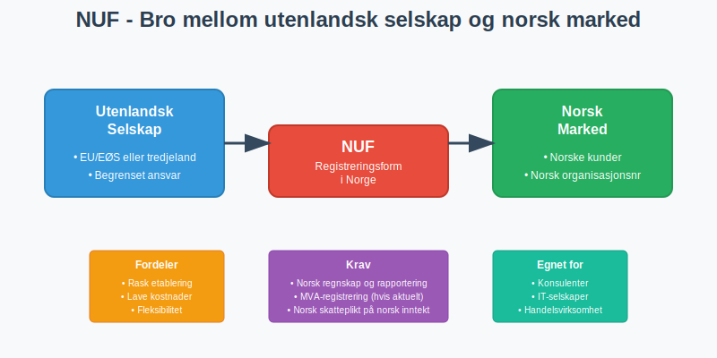
Definisjon av NUF
Norskregistrert Utenlandsk Foretak (NUF) er en registreringsordning som lar utenlandske selskaper:
- Drive virksomhet i Norge under sitt opprinnelige navn
- Beholde sin utenlandske selskapsform og juridiske struktur
- Få norsk organisasjonsnummer for norsk virksomhet
- Oppfylle norske rapporterings- og regnskapskrav
NUF er ikke en egen selskapsform, men en måte å registrere utenlandsk virksomhet på i Norge. Det utenlandske selskapet beholder sin opprinnelige juridiske status og styring.
Forskjell fra Filial
Mens en filial er en del av det utenlandske selskapet som driver virksomhet i Norge, er NUF en registreringsform som gjelder for hele det utenlandske selskapets virksomhet i Norge:
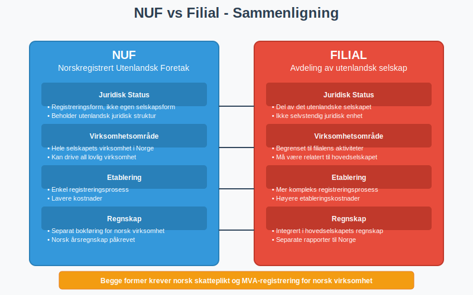
Hvem Kan Registrere NUF?
Kvalifiserte Selskaper
NUF-registrering er tilgjengelig for selskaper som:
- Er etablert i utlandet med gyldig registrering
- Har begrenset ansvar (tilsvarende norsk AS)
- Kommer fra land med skatteavtale med Norge
- Oppfyller krav til selskapsstyring og transparens
EU/EØS-selskaper
Selskaper fra EU/EØS-området har særlige fordeler:
- Forenklet registreringsprosess
- Gjensidig anerkjennelse av selskapsformer
- Fri etableringsrett innenfor EØS
- Mindre dokumentasjonskrav
Selskaper fra Tredjeland
Selskaper utenfor EU/EØS må oppfylle strengere krav:
- Detaljert dokumentasjon av selskapsstruktur
- Bekreftelse på lovlig etablering i hjemlandet
- Eventuelt krav om norsk representant
Virksomhetstyper
NUF egner seg særlig godt for:
- Konsulentvirksomhet og profesjonelle tjenester
- Teknologiselskaper med norske kunder
- Handelsvirksomhet med import/eksport
- Bygge- og anleggsvirksomhet på norske prosjekter
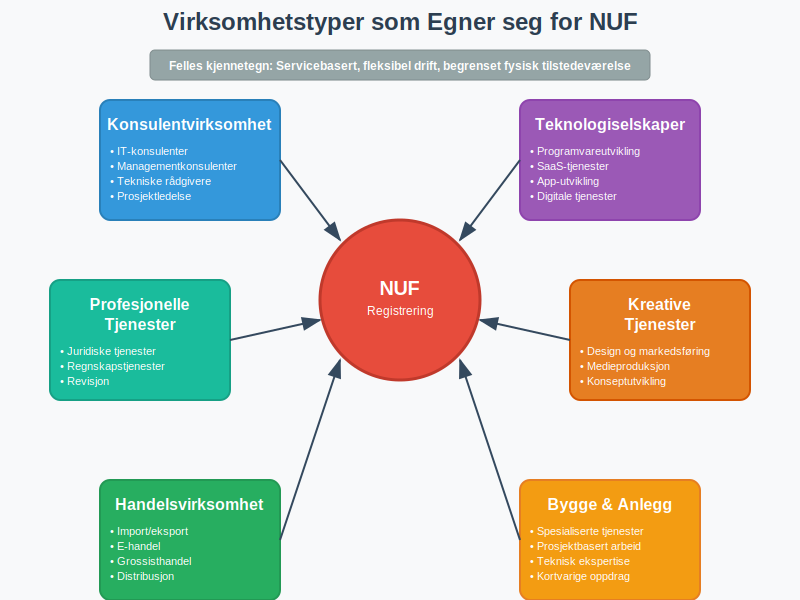
Registreringsprosess
Dokumentasjon som Kreves
For å registrere NUF må følgende dokumenter fremlegges:
Grunnleggende Dokumenter
- Registreringsbevis fra hjemland (ikke eldre enn 6 måneder)
- Vedtekter eller tilsvarende stiftelsesdokument
- Oversettelse til norsk av alle dokumenter
- Apostille eller annen bekreftelse på dokumentenes ekthet
Tilleggsdokumenter
- Fullmakt til norsk representant (hvis aktuelt)
- Bekreftelse på selskapets aktivitet og formål
- Kontaktinformasjon for ansvarlige personer
- Bankreferanser eller økonomisk dokumentasjon
Registreringsprosedyre
| Steg | Beskrivelse | Tidsramme | Kostnad |
|---|---|---|---|
| 1. Forberedelse | Samle inn og oversette dokumenter | 2-4 uker | Varierer |
| 2. Søknad | Innsending til Brønnøysundregistrene | 1 dag | 2 700 kr |
| 3. Behandling | Saksbehandling og kontroll | 2-3 uker | - |
| 4. Registrering | Tildeling av organisasjonsnummer | 1 dag | - |
| 5. Oppfølging | MVA- og skatteregister | 1-2 uker | - |
Digitale Løsninger
Registreringsprosessen kan gjennomføres digitalt gjennom:
- Altinn for norske representanter
- Brønnøysundregistrenes nettsider
- Kvalifiserte rådgivere med digital tilgang
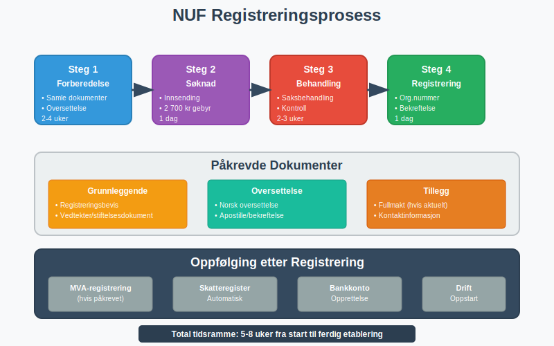
Skattemessige Forhold
Skatteplikt i Norge
NUF-registrerte selskaper blir begrenset skattepliktige til Norge for:
Skattepliktig Inntekt
- Inntekt fra virksomhet drevet i Norge
- Inntekt fra fast eiendom i Norge
- Royalties og lisenser knyttet til norsk virksomhet
- Kapitalgevinster fra norske eiendeler
Skattefritak
- Inntekt fra virksomhet i hjemlandet
- Utbytte fra utenlandske selskaper (med forbehold)
- Kapitalgevinster fra utenlandske investeringer
Skattesatser og Beregning
Selskapsskatt for NUF følger samme satser som norske selskaper:
| Inntektstype | Skattesats | Merknad |
|---|---|---|
| Alminnelig inntekt | 22% | Standard selskapsskatt |
| Petroleumsinntekt | 78% | Spesiell petroleumsskatt |
| Kraftproduksjon | 37% | Grunnrenteskatt + alminnelig |
| Finansinntekt | 22% | Med eventuelle unntak |
Skatteavtaler
Skatteavtaler mellom Norge og hjemland kan:
- Redusere skatten på visse inntektstyper
- Eliminere dobbeltbeskatning
- Gi kreditt for skatt betalt i Norge
- Definere hvor virksomheten anses drevet
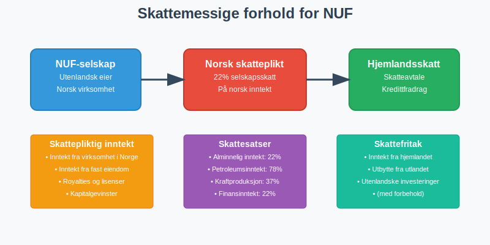
Regnskapsmessige Krav
Bokføringsplikt
NUF-registrerte selskaper har bokføringsplikt for norsk virksomhet:
Omfattende Bokføring
- Alle transaksjoner knyttet til norsk virksomhet
- Separate konti for norsk og utenlandsk aktivitet
- Dokumentasjon av alle forretningshendelser
- Oppbevaring av bilag og dokumenter
Regnskapsstandard
NUF kan velge mellom:
- Norsk regnskapsstandard (forenklet eller god regnskapsskikk)
- IFRS (International Financial Reporting Standards)
- Hjemlandets standard (med tilpasninger til norske krav)
Rapporteringsplikt
Årsregnskap
NUF må levere årsregnskap som viser:
- Resultatregnskap for norsk virksomhet
- Balanseregnskap per 31. desember
- Noter med tilleggsopplysninger
- Årsberetning (hvis påkrevet)
Frister og Innsending
- Regnskapsåret følger kalenderåret (1. januar - 31. desember)
- Innleveringsfrist er 31. mai året etter
- Innsending skjer elektronisk via Altinn
Revisjonsplikt
NUF har revisjonsplikt når:
- Årsomsetning overstiger 70 millioner kr
- Balansesum overstiger 35 millioner kr
- Gjennomsnittlig antall ansatte overstiger 50
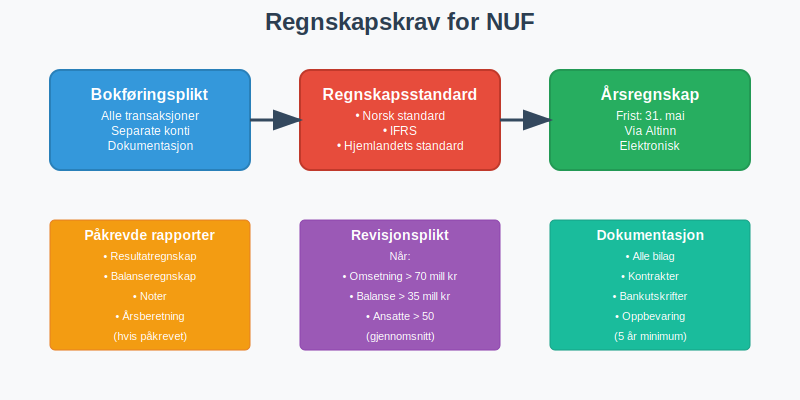
MVA-forhold
MVA-registrering
NUF må registreres for merverdiavgift når:
- Omsetning av avgiftspliktige varer/tjenester overstiger 50 000 kr per år
- Import av varer til Norge
- Tjenester leveres til norske kunder (avhengig av type)
Registreringsprosess
- Søknad sendes samtidig med NUF-registrering
- Vurdering av virksomhetens art og omfang
- Tildeling av MVA-nummer
- Oppstart av periodisk rapportering
MVA-satser og Beregning
NUF følger norske MVA-satser:
| Vare/Tjeneste | MVA-sats | Eksempler |
|---|---|---|
| Alminnelig sats | 25% | De fleste varer og tjenester |
| Middels sats | 15% | Næringsmidler |
| Lav sats | 11,11% | Persontransport, overnatting |
| Nullsats | 0% | Eksport, internasjonale tjenester |
| Fritatt | - | Finansielle tjenester, helse |
Fradragsrett
NUF har fradragsrett for inngående MVA på:
- Anskaffelser til norsk virksomhet
- Tjenester kjøpt i Norge
- Import av varer til virksomheten
- Investeringer i norsk virksomhet
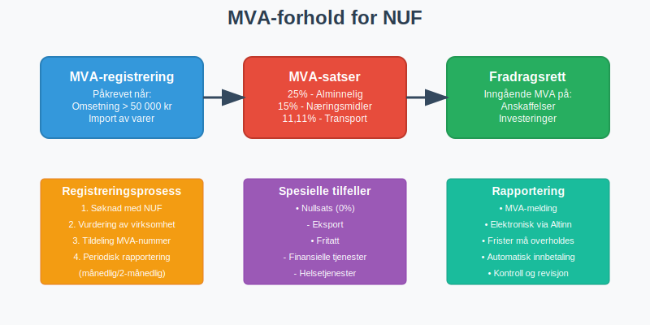
Fordeler og Ulemper
Fordeler med NUF
Økonomiske Fordeler
- Lavere etableringskostnader enn norsk selskap
- Ingen aksjekapital kreves
- Fleksibel kapitalstruktur beholdes
- Skatteoptimalisering gjennom skatteavtaler
Administrative Fordeler
- Raskere etablering enn stiftelse av norsk selskap
- Beholder hjemlandets styring og struktur
- Enklere konsernrapportering
- Kjent juridisk ramme fra hjemlandet
Strategiske Fordeler
- Testmarked for norsk ekspansjon
- Fleksibilitet til å endre strategi
- Internasjonalt omdømme bevares
- Enklere exit hvis nødvendig
Ulemper og Utfordringer
Regnskapsmessige Utfordringer
- Dobbelt bokføring (Norge og hjemland)
- Kompleks skatteberegning med skatteavtaler
- Valutaomregning og kursrisiko
- Koordinering mellom ulike regnskapsstandarder
Juridiske Begrensninger
- Begrenset virksomhetsområde til registrert aktivitet
- Avhengighet av skatteavtaler
- Potensielle endringer i regelverket
- Kompleks oppløsning ved avvikling
Sammenligning med Alternativer
| Etableringsform | Kostnad | Tid | Fleksibilitet | Kompleksitet |
|---|---|---|---|---|
| NUF | Lav | Kort | Høy | Middels |
| Norsk AS | Høy | Lang | Lav | Lav |
| Filial | Middels | Middels | Middels | Høy |
| Fast driftssted | Lav | Kort | Høy | Høy |
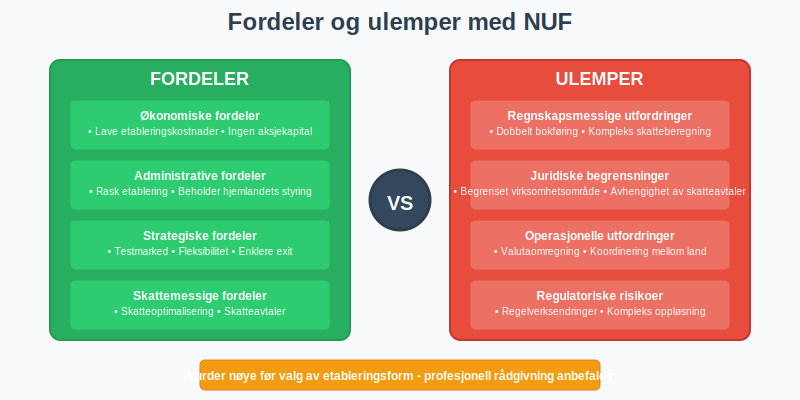
Praktiske Eksempler
Eksempel 1: Svensk Konsulentselskap
Situasjon: Et svensk konsulentselskap ønsker å levere IT-tjenester til norske kunder.
Løsning med NUF
- Registrering: NUF-registrering med svensk selskap som eier
- Virksomhet: Levering av konsulenttjenester fra Sverige til Norge
- Regnskap: Separat bokføring for norsk omsetning
- Skatt: 22% norsk selskapsskatt på norsk inntekt, kreditt i Sverige
Resultat
- Rask etablering på 4-6 uker
- Lave etableringskostnader (under 50 000 kr)
- Fleksibel drift med hjemmekontor i Sverige
- Skatteeffektiv løsning gjennom skatteavtale
Eksempel 2: Dansk Handelsselskap
Situasjon: Et dansk selskap ønsker å importere og selge varer i Norge.
Utfordringer
- MVA-registrering påkrevet for import
- Lagerhåndtering og distribusjon i Norge
- Kundeservice på norsk
- Garantiansvar etter norsk lov
NUF-løsning
- Import-MVA håndteres gjennom NUF
- Norsk representant for kundeservice
- Separate konti for norsk handel
- Koordinert rapportering til begge land
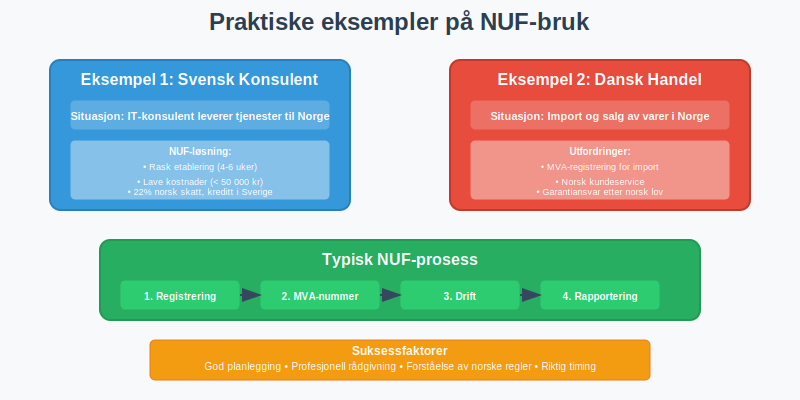
Avvikling og Endringer
Når Bør NUF Avvikles?
Strategiske Årsaker
- Permanent etablering ønskes i Norge
- Økt virksomhet gjør norsk AS mer hensiktsmessig
- Endret forretningsmodell krever annen struktur
- Skattemessige forhold endres
Praktiske Årsaker
- Kompleksitet blir for stor
- Kostnader overstiger fordelene
- Regulatoriske endringer påvirker virksomheten
- Markedsforhold endres
Avviklingsprosess
Forberedelser
- Gjennomgang av alle forpliktelser og eiendeler
- Avstemming med skattemyndigheter
- Avslutning av kundeforhold og kontrakter
- Dokumentasjon av alle transaksjoner
Formell Avvikling
- Melding til Brønnøysundregistrene
- Sluttoppgjør for skatt og MVA
- Avslutning av bankkonti og avtaler
- Sletting fra registre
Overgang til Norsk Selskap
Mange NUF-selskaper velger senere å etablere norsk datterselskap:
Prosess
- Stiftelse av norsk AS
- Overdragelse av norsk virksomhet
- Skattemessig behandling av overdragelsen
- Avvikling av NUF-registrering
Skattemessige Konsekvenser
- Realisasjon av eiendeler kan utløse skatt
- Kontinuitetsregler kan gi skattefrihet
- Timing er viktig for skatteoptimalisering
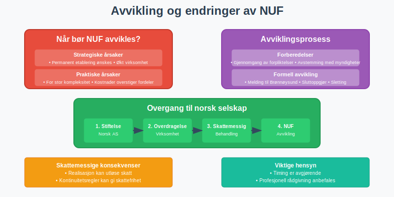
Fremtidige Utviklingstrekk
Digitalisering
Automatiserte Prosesser
- Digital registrering og rapportering
- Sanntids-rapportering til skattemyndigheter
- Automatisk MVA-beregning og innbetaling
- AI-støttet regnskapsføring og compliance
Internasjonale Standarder
- Felles EU-standarder for grenseoverskridende virksomhet
- Blockchain-basert dokumentasjon og verifikasjon
- Harmoniserte rapporteringskrav
- Digital identitet for internasjonale selskaper
Regulatoriske Endringer
Skjerpede Krav
- Økt transparens om eierskap og kontroll
- Strengere dokumentasjon av virksomhet
- Utvidet rapporteringsplikt for store selskaper
- Bærekraftsrapportering også for NUF
Forenklinger
- Digitale løsninger reduserer administrativ byrde
- Automatisk utveksling av informasjon mellom land
- Forenklet registrering for EU/EØS-selskaper
- Standardiserte prosesser på tvers av land
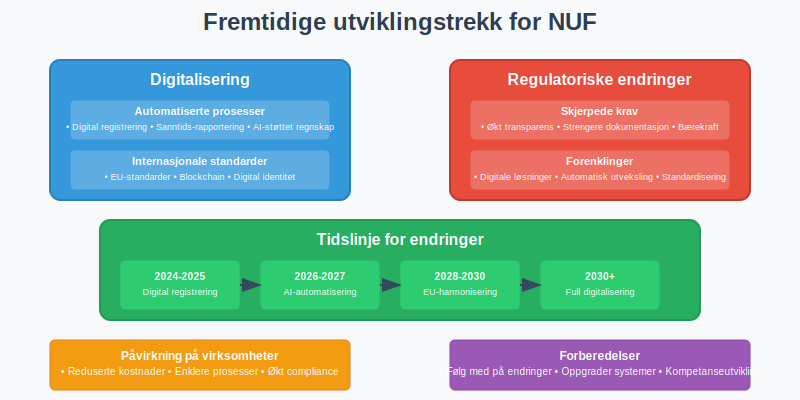
Rådgivning og Støtte
Profesjonell Hjelp
Når Trenger Man Rådgiver?
- Kompleks selskapsstruktur i hjemlandet
- Usikkerhet om skattemessige forhold
- Store transaksjoner eller investeringer
- Spesielle bransjer med særregler
Type Rådgivere
- Regnskapsførere med internasjonal erfaring
- Skatterådgivere med kunnskap om skatteavtaler
- Advokater med selskapsrettslig kompetanse
- Konsulenter med bransjespesifikk kunnskap
Offentlige Ressurser
Brønnøysundregistrene
- Veiledning om registreringsprosess
- Skjemaer og dokumentasjon
- Kontaktinformasjon for spørsmål
- Oppdateringer om regelverksendringer
Skatteetaten
- Informasjon om skatteplikt og -beregning
- Veiledning om MVA-forhold
- Skjemaer for rapportering
- Kontakt for spesifikke spørsmål
Innovation Norway
- Støtteordninger for internasjonale selskaper
- Nettverksbygging og markedsinformasjon
- Rådgivning om etablering i Norge
- Kontakter til relevante aktører
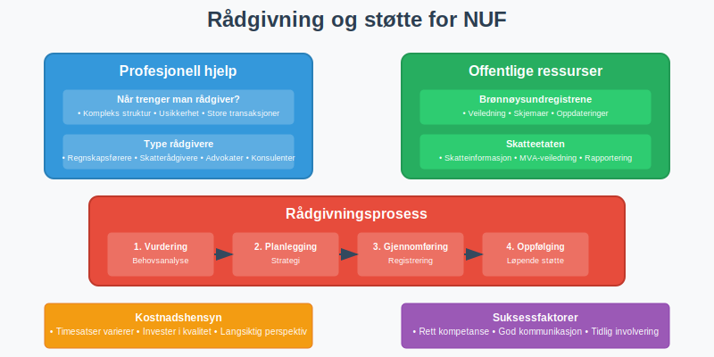
Konklusjon
NUF (Norskregistrert Utenlandsk Foretak) er en fleksibel og kostnadseffektiv løsning for utenlandske selskaper som ønsker å etablere seg i Norge. Ordningen gir mulighet til å:
Hovedfordeler
- Rask etablering uten å starte norsk selskap
- Beholde utenlandsk selskapsstruktur og styring
- Skatteoptimalisering gjennom skatteavtaler
- Fleksibilitet til å teste det norske markedet
Viktige Hensyn
- Regnskapsmessige krav må oppfylles for norsk virksomhet
- Skattemessige forhold kan være komplekse
- MVA-registrering er ofte påkrevet
- Profesjonell rådgivning anbefales for komplekse situasjoner
Egnet for
NUF passer særlig godt for serviceselskaper, konsulentvirksomhet, teknologiselskaper og handelsvirksomhet som ønsker å etablere seg gradvis i Norge.
For selskaper som vurderer permanent etablering eller har omfattende norsk virksomhet, kan det være mer hensiktsmessig å etablere et norsk aksjeselskap eller annen foretaksform.
God planlegging og profesjonell rådgivning er avgjørende for å sikre at NUF-registrering er den optimale løsningen for den konkrete situasjonen. Det er viktig å vurdere både kortsiktige og langsiktige mål for virksomheten i Norge.
Uansett valg av etableringsform er det essensielt å følge norske krav til regnskap, bokføring og rapportering for å sikre lovlig og vellykket drift i Norge.